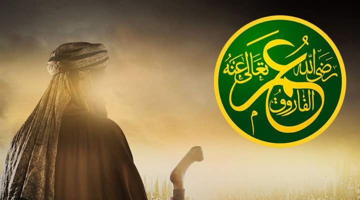

عمر بن الخطاب
هو عمر بن الخطاب بن نفيل بن عبد العزى العدوي القرشي، أبو حفص ولقبه النبي صلى الله عليه وسلم بالفاروق، أمه حنتمة بنت هشام بن المغيرة المخزومية وهي أخت أبي جهل عمرو بن هشام، وهو ثاني الخلفاء الراشدين، وأول من لقب بأمير المؤمنين، كان في الجاهلية من أبطال قريش وأشرافهم، وكانت له السفارة فيهم، ينافر عنهم وينذر من أرادوا إنذاره، أسلم قبل الهجرة بخمس سنوات وشهد الوقائع مع النبي صلى الله عليه وسلم، وأرسله النبي صلى الله عليه وسلم في عدة سرايا.
بويع بالخلافة يوم وفاة أبي بكر الصديق وبعهد منه، بعد استشارة الناس فيه فوافقوه، ولاه أبو بكر القضاء في عهده فكان أول قاضٍ في الإسلام، ولم يأته مدة ولايته القضاء متخاصمان، لأن طلاوة الإيمان وأخوة الإسلام كانت تمنع الناس من التخاصم، فإذا اختلفوا استفتوا ونزلوا عند إفتاء من يفتيهم من الصحابة، قطع العطاء عن المؤلفة قلوبهم بعد اعتزاز الإسلام وقوة شوكته، أخضع أراضي البلاد المفتوحة عنوة للخراج ولم يقسمها بين الغانمين، لكي يستكملوا فريضة الجهاد، وأعادها إلى أصحابها الذين كانوا عليها وجعل خراجها حقا للمسلمين. أول من بدأ التاريخ بسنة الهجرة النبوية، وأول من دون الدواوين في الإسلام، جعلها على الطريقة الفارسية، لإحصاء الأعطيات، وتوزيع المرتبات لأصحابها حسب سابقتهم في الإسلام، اتخذ بيت مال المسلمين، وكانت الدراهم على أيامه على نقش الكسروية، فزاد فيها (الحمد لله) وفي بعضها زاد (لا إله إلا الله)، وفي بعضها (محمد رسول الله)، رد النساء المسبيات في حرب الردة إلى عشائرهن، وقال: كرهت أن يصير السبي سبة على العرب، ضرب في شرب الخمر ثمانين جلدة، وكانت أربعين وحرم المتعة ونهى عن بيع أمهات الأولاد، اتخذ داراً للدقيق وجعل فيها الدقيق والتمر والسويق والزبيب وما يحتاج إليه، يعين به المنقطع، وكان يخرج إذا صلى الآخرة -أي العشاء- فيطوف بدرته على من في المسجد، فينظر إليهم ويعرف وجوههم ويسألهم هل أصابوا عشاء، وإلا خرج فعشاهم، كان له عيون يتقصى بها أحوال الجيش وأحوال عماله في الأمصار، وكان إذا أتاه وفد من مصر من الأمصار سألهم عن حالهم وأسعارهم وعمن يعرف من أهل البلاد وعن أميرهم، وهل يدخل عليه الضعيف وهل يعود المريض، فإن قالوا نعم، حمد الله، وإن قالوا: لا، كتب إليه: أقبل، كان إذا بعث عاملاً يشترط عليه أربعاً: ألا يركب البراذين، ولا يلبس الرقيق، ولا يأكل النقي، ولا يتخذ بواباً. ومر يوماً ببناء يبنى بحجارة وجص، فقال: لمن هذا؟ فذكروا عاملاً له على البحرين، فقال: أبت الدراهم إلا أن تخرج أعناقها، وشاطره ماله، في أيامه تم فتح الشام والعراق وافتتحت القدس والمدائن ومصر والجزيرة وخراسان وكرمان وسجستان وقبرص. وانتصب في مدة خلافته اثنا عشر ألف منبر في الإسلام، أنشأ سبلا بين مكة والمدينة ووفر بذلك على السالكين حمل الماء، قالت له أم حكيم بنت الحارث اتق الله يا عمر، فقام إليها أحد الحاضرين يريد لطمها، فمنعه عمر وقال له: دعها تقول، فوالله لا خير فيهم إن لم يقولوها، ولا خير فينا إن لم نسمعها، كان عمر يقول: لو مات جمل ضياعا على شط الفرات لخشيت أن يسألني الله عنه، وكان يقول: أحب الناس إلي من أهدى إلي عيوبي. أجلى يهود خيبر إلى الشام ونصارى نجران إلى الكوفة وقال: لا يجتمع دينان في جزيرة العرب، اغتاله أبو لؤلؤة فيروز الفارسي غلام المغيرة بن شعبة في صبيحة يوم الأربعاء 25 ذو الحجة وهو يؤم الناس في صلاة الفجر، فمات ودفن إلى جانب أبي بكر في الروضة الشريفة التي دفن فيها رسول الله صلى الله عليه وسلم، كانت مدة خلافته عشر سنين وستة أشهر، قال عنه النبي صلى الله عليه وسلم: إن الله جعل الحق على لسان عمر، وقال أبو بكر إنه سمع رسول الله صلى الله عليه وسلم يقول: ما طلعت الشمس على رجل خير من عمر. ، توفي عن ثلاث وستين من العمر.